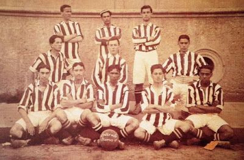
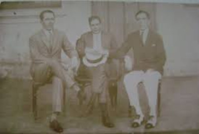

Fundação do clube
A origem do Sport Club Internacional está ligada à integração entre povos de diferentes nacionalidades. Diferente de outros clubes da capital gaúcha da época, voltados principalmente a descendentes de alemães, o Inter surgiu acolhendo diversas etnias. Sua fundação foi conduzida diretamente pelos irmãos Henrique Poppe Leão, José Eduardo Poppe e Luiz Madeira Poppe, que chegaram a Porto Alegre por volta de 1908, em meio à efervescência do futebol no Brasil.
Irmãos Poppe
A família Poppe é muito famosa no Rio Grande do Sul por ter fundado um dos maiores clubes do Brasil e um dos maiores símbolos do estado em 1909, pouco tempo após chegarem a Porto Alegre.Nascidos no Rio de Janeiro, os irmãos Henrique Poppe Leão, José Eduardo Poppe e Luiz Madeira Poppe chegaram à capital do Rio Grande do Sul em 1901. Henrique, o mais conhecido dos irmãos, era jornalista e trabalhava no Estadão, mas abandonou a carreira para se dedicar ao comércio. Pouco tempo depois, entrou na política e se filiou ao Partido Republicano Riograndense (PRR), o que abriu as portas para seu retorno ao jornalismo.
